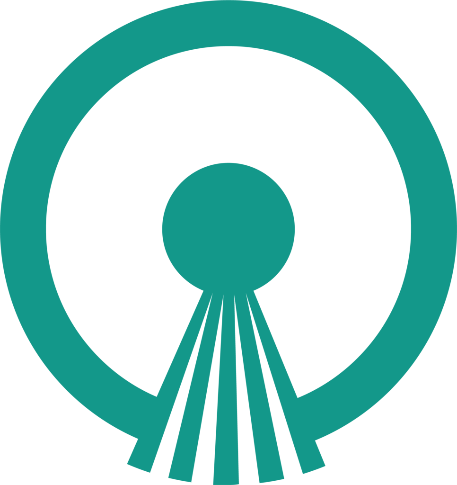

Michael Mentele
Full Stack Web Developer
Message
I co-created Open Source Watch (OSW); an application consisting of 16+ processes scaled up and out across 8 servers coordinated with Redis which make 2 million+ requests per day against Github. OSW has persisted 20,000,000+ records to a PostgreSQL database. You can see the full story at opensourcewatch.com/story. If you only have a few moments, checkout the ToC.
OSW is backend focused, but I am also grounded in Javascript and frontend patterns. I can pick up any framework flavor of the week. I've used Backbone.js to create a Trello-like app that interfaces with a RESTful Rails 5 API via JSON web tokens. For more, click through my Github.
Spotlight
Open Source Watch
Tracking Open-Source Contributions - 16+ processes across 8 servers
- 2,000,000+ requests per day
- CLI app for centralized monitoring and control
- Query time from 50s to 200ms with materialized views
- Hashed repeat scraping jobs by repo activity level for granular control over job frequency tuning
Projects
Frontend
Mrello Client - Trello-like client communicating to API with signed JWTs.
Backbone Todos - Dynamically derives categories from todos.
Backend
Mrello API - Rails 5 API serving Backbone client with a RESTful API.
Kelp - Yelp-like Rails app with 3rd party API integrations (Stripe).
More
MIT: Intro to CS - Search algorithms and Big O. Projects written in Python.
Katas - 100+ DS & Algorithms problems and coding exercises.
Trajectory
2016
Software Transition
Web Developer — Current
7 Months
Development period to build CS fundamentals and interesting applications.
• 60,000+ lines of code over 2,400+ hours across 1500+ Github contributions.
Experience
2012 - 2014
Schweitzer Engineering Labs
Associate Power Engineer in R&D
2 Years
Authored specs, tests, and embedded control logic for critical infrastructure of international and domestic clients e.g. Saudi Aramco and PG&E.
• Created 3+ new protection logic specifications and 10+ functional tests
• Performed & Automated 50+ functional tests across 10+ projects
• Identified and owned 70+ logged system issues
University
2012
Washington State - Pullman, Wa
BS, Electrical Engineering — President's Honor Roll
• Successfully led multi-national senior design team for Avista Utilities.Michael Mentele — michaelrmentele@gmail.com — 206 618 4282